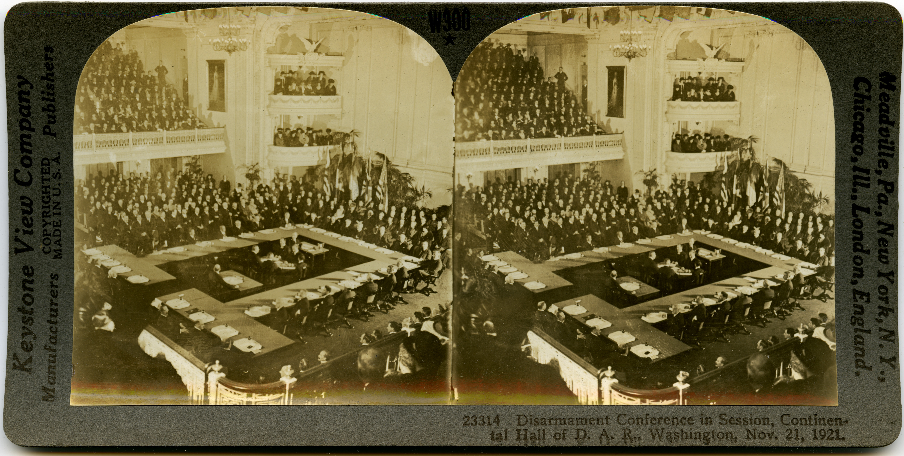
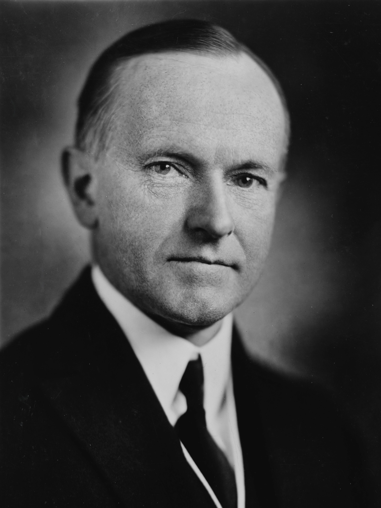
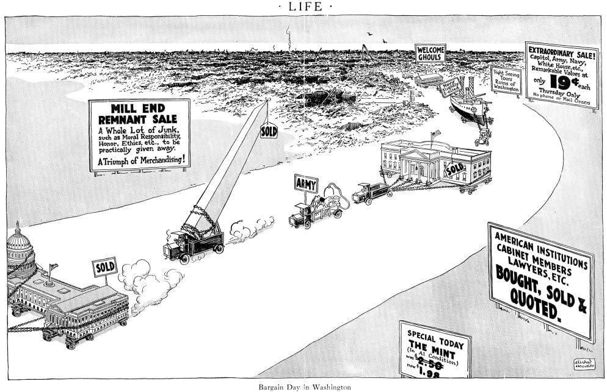

Directions: The class staffs five decision desks of the Republican administrations: oil leases, tax policy, the tariff, the naval conference, and the peace pact. At your desk, read the document, answer the questions, and issue a decision with your reasons. Record every decision. In Part 2 you will compare your desk record with what the administrations actually did, and judge the differences.

The photograph shows Desk 4 at work. Every desk in this simulation faced the same underlying question the lesson asks: how far should the government act, and where should it stop?
Source: Summary of the record before the Secretary of the Interior, drawn from the hearings of the Senate Committee on Public Lands and Surveys, 1923 to 1924.
The Navy's oil reserves at Teapot Dome, Wyoming, and Elk Hills, California, are held for a future emergency. Private wells on land beside the reserves are drawing oil from the same underground pools, and oilmen argue that the reserve oil will drain away unless the reserves are leased and drilled at once. Two oilmen, Harry F. Sinclair and Edward L. Doheny, offer to take leases on both reserves. They ask that the leases be granted without public notice and without bids from other companies, so that competitors do not learn the terms. The law expects leases on public land to be competed for openly. The secretary may also refuse to lease and leave the oil in the ground under guard.
What do the oilmen want, and what reason do they give for secrecy?
Your decision: lease by open bidding, lease in secret as asked, or refuse to lease. State the decision and the reason your desk gives for it.
Source: Summary of the argument of Secretary of the Treasury Andrew W. Mellon, from Taxation: The People's Business (1924) and his annual reports to Congress.

The wartime income tax takes up to 73 cents of each dollar in the highest bracket. Mellon holds that a rate this high does not produce revenue. A wealthy man can place his money in tax exempt state and city bonds and pay nothing, and many do. Money parked in those bonds builds nothing. Lower the top rate, Mellon argues, and the same men will move their capital into railroads, factories, and mines, where it sets men to work and where its profits can be taxed at the lower rate. He proposes cutting the top rate in stages to 25 percent.
What problem does Mellon say the 73 percent rate creates, and how would a lower rate solve it?
Your decision: adopt Mellon's plan, keep the wartime rates, or cut rates for lower incomes only. State the decision and the reason your desk gives for it.
Source: Two positions before Congress in 1922, summarized from the hearings and debate on the tariff bill.
Position A, manufacturers and farm organizations: Foreign goods made with cheaper labor undersell American products in the American market. Duties must rise so that American factories and farms can hold their home market and keep their workers employed.
Position B, importers, exporters, and European governments: High American duties keep foreign goods out, so foreign nations cannot earn dollars. Without dollars they cannot buy American farm exports, and they cannot pay their war debts to the United States.
Which groups gain if duties rise, and which groups lose? Name two of each from the two positions.
Your decision: raise duties, hold them where they are, or lower them. State the decision and answer Position B's point about the war debts.
Source: Summary of the proposal of Secretary of State Charles Evans Hughes at the opening session of the Washington Conference, November 12, 1921.
The United States, Britain, and Japan are building ever larger battleships, each fleet answering the last, at great cost to all three treasuries. Hughes proposes that the three powers stop building capital ships for ten years, scrap a named list of ships built and building, and fix their battle fleets in a ratio of 5 for the United States, 5 for Britain, and 3 for Japan. France and Italy would take smaller shares. The proposal is made in public, before the press of the world, so that no delegation can quietly walk away from it.
What three things does Hughes ask the naval powers to do?
Your decision, as the American delegation: accept the ratio, or hold out for a larger American fleet. State the decision and the reason your desk gives for it.
Source: The Kellogg-Briand Pact, Articles I and II, signed at Paris, August 27, 1928. Text as printed in the League of Nations Treaty Series, vol. 94.
Article I: "The High Contracting Parties solemnly declare in the names of their respective peoples that they condemn recourse to war for the solution of international controversies and renounce it as an instrument of national policy in their relations with one another."
Article II: "The High Contracting Parties agree that the settlement or solution of all disputes or conflicts of whatever nature or of whatever origin they may be, which may arise among them, shall never be sought except by pacific means."
The pact names no penalty for a nation that breaks it, creates no court to judge a breach, and assigns no force to stop one. France first proposed a pact between France and the United States alone. Secretary Kellogg has opened it to all nations instead. Fifteen nations are ready to sign.
In your own words, what do the signing nations promise, and what does the pact give no one the power to do?
Your decision, as the Senate: approve the pact as written, approve it only if an enforcement clause is added, or reject it. State the decision and the reason your desk gives for it.

Desk 1, oil leases. Secretary Fall leased both reserves in secret, without bids. He took $100,000 in cash from Doheny and large loans and gifts from Sinclair. Senate investigators exposed the leases, the courts canceled them, and Fall went to prison.
Desk 2, tax policy. Congress adopted Mellon's program in stages. The top rate fell from 73 percent to 25 percent by 1926, and the Treasury ran surpluses through the decade.
Desk 3, the tariff. Congress passed the Fordney-McCumber Tariff in 1922, raising duties to some of the highest levels in the nation's history. The European argument about the war debts was heard and set aside.
Desk 4, the naval conference. The powers accepted the Hughes proposal almost whole. The Five-Power Treaty fixed the 5 to 5 to 3 ratio, paused battleship building for ten years, and sent fleets of warships to the scrapyard.
Desk 5, the peace pact. Fifteen nations signed at Paris in August 1928. The Senate approved the pact 85 to 1 after stating that it did not limit self-defense and did not require the United States to enforce it. Nothing was added to give the pact force.
Mark each desk S if your decision matched the record, or D if it differed.
______ Desk 1: The Oil Leases
______ Desk 2: Tax Policy
______ Desk 3: The Tariff
______ Desk 4: The Naval Conference
______ Desk 5: The Peace Pact
Compare your desk record with the administrations' record. Choose the two desks where your decisions differed most from what the administrations did. For each one, explain the difference, and judge which decision better served the country, using evidence from the desk document.
What do the oilmen want, and what reason do they give for secrecy? Sinclair and Doheny want leases on the whole of both naval reserves, granted without public notice or competing bids. Their stated reason is drainage: private wells beside the reserves are drawing oil from the same pools, so the reserve oil must be drilled at once or lost, and open bidding would let competitors learn the terms. The drainage claim was the public argument; the secrecy is what allowed Fall to be paid.
The desk decision. Any of the three decisions can earn credit if the reasoning uses the document. The strongest answers choose open bidding, because it answers the drainage argument while keeping the lease honest and testable. A refusal to lease is defensible if the desk argues the reserve exists for an emergency that has not come. A secret lease repeats what Fall did and should be pressed hard in discussion: secrecy plus a sole source lease on public property is the structure of the scandal, whatever the desk intends.
What problem does Mellon say the 73 percent rate creates, and how would a lower rate solve it? At 73 percent, wealthy investors shelter their money in tax exempt bonds, where it earns a return, pays no tax, and builds nothing. The Treasury loses the revenue and the economy loses the investment. A top rate of 25 percent makes taxable investment in railroads, factories, and mines the better choice, so capital goes to work and its profits are taxed at the lower rate.
The desk decision. The administration adopted Mellon's plan in full (Revenue Acts of 1921, 1924, and 1926). Credit any decision argued from the document, including a lower brackets only cut, if the desk states what happens to revenue and investment under its choice. Weak answers repeat that lower taxes are popular without addressing Mellon's sheltering argument.
Which groups gain if duties rise, and which groups lose? Gainers: American manufacturers and farmers selling in the home market, and their workers, whose jobs the duties shelter. Losers: importers and exporters, European governments that need dollars for war debts and purchases, and American buyers, who pay the higher prices protection allows. Any two of each, tied to the positions.
The desk decision. Congress raised the duties (Fordney-McCumber, 1922) and set the debt argument aside. Credit a raise, hold, or lower decision if it answers Position B directly: a desk that raises duties must say how Europe is to earn dollars, and a desk that lowers them must say how home producers are to meet cheaper foreign labor. The historical record never answered the contradiction, which is the point students should reach.
What three things does Hughes ask the naval powers to do? Stop building capital ships for ten years; scrap a named list of ships built and building; and accept fixed ratios for their battle fleets, 5 to 5 to 3 for the United States, Britain, and Japan, with smaller shares for France and Italy.
The desk decision. The powers accepted the proposal almost whole, an unusual result students should note: this desk is the one case where the administration acted boldly abroad and the boldness worked on its own terms. A holdout answer earns credit only if it prices the alternative, an open ended building race against two treasuries as strained as the American one.
What do the signing nations promise, and what does the pact give no one the power to do? The signers condemn recourse to war for the solution of international controversies and renounce war as an instrument of national policy, and they promise to settle every dispute by pacific means only. The pact gives no one power to judge a breach, punish it, or stop a war: there is no court, no penalty, and no force. The Senate's approval carried the statement that self-defense was untouched and enforcement was not an American duty.
The desk decision. The Senate approved as written, 85 to 1. Credit an enforcement condition if the desk concedes what it costs: the other nations would likely refuse it, and the United States would be promising the very commitment the Senate spent the decade avoiding. Credit a rejection if the desk argues that a promise no one can enforce cheapens promises generally. Both are live readings of the document; reciting that the pact outlawed war, without the enforcement gap, is not.
Full credit should be awarded if the student: